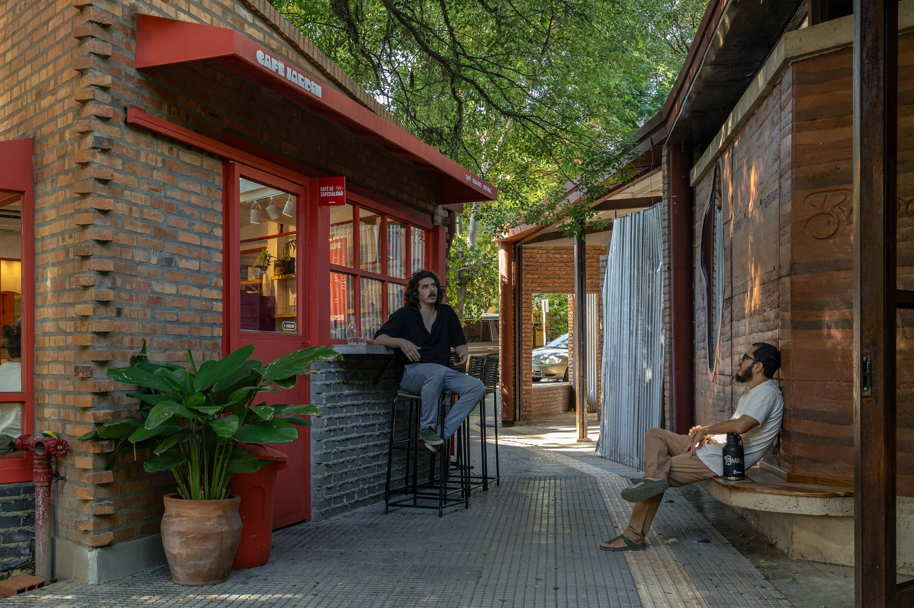

Grupo Culata Jovái es un estudio de arquitectura y urbanismo con sede en Asunción, Paraguay. El estudio se dedica principalmente al diseño arquitectónico y urbano, así como a la construcción, extendiendo su práctica a actividades académicas, docencia, música y arte.
Fundado en 2011 por Miguel Ángel (Miky) González Merlo, el estudio incorporó a Emmerick Braun como socio en 2017.
Miguel Ángel (Miky) González Merlo es arquitecto por la Facultad de Arquitectura, Diseño y Arte de la Universidad Nacional de Asunción (FADA-UNA), donde también se ha desempeñado como docente. Además de su carrera arquitectónica, ha incursionado en la música como cantante, guitarrista y compositor en diversos proyectos musicales, destacándose Villagrán Bolaños.
Emmerick Braun es arquitecto por la Facultad de Arquitectura, Diseño y Arte de la Universidad Nacional de Asunción (FADA-UNA) y posee un Máster en Estudios Avanzados en Arquitectura (MBArch) con especialidad en Urbanismo por la Escola Tècnica Superior d’Arquitectura de Barcelona (ETSAB-UPC). Actualmente enseña Diseño Urbano en la FADA-UNA.
Han sido invitados por numerosas instituciones para presentar el trabajo del estudio, el cual también ha recibido premios y ha sido expuesto y publicado tanto a nivel nacional como internacional.